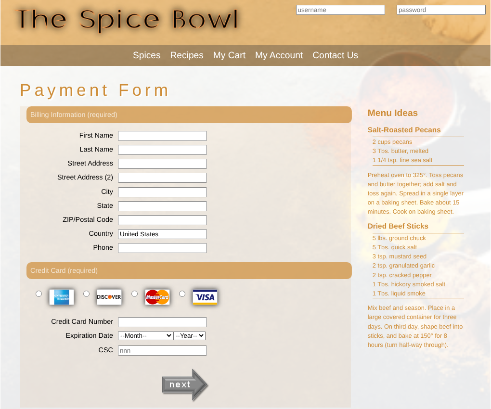

Every funnel I build ends in a web page or a form, so knowing how HTML, CSS, and JavaScript fit together is practical for me, not academic. These CIS 150 projects run live below. Click into any of them. This portfolio site is also hand-built in HTML and CSS and hosted on GitHub Pages.
CIS 150 · New Perspectives on HTML5 and CSS3 projects · Fall 2024
A checkout form that checks every field before it can be submitted, so bad data never makes it into the system. That's the same principle behind clean CRM data: it's far cheaper to stop a bad record at the form than to clean it up later.
:valid and :invalid styles turn each field green or red as you type.
A family-history site where each page shares a base stylesheet and adds page-specific visual styles: custom web fonts, framed images, drop shadows, gradients, and rounded borders.
A 10-second countdown using setInterval() to tick every second and clearInterval() to stop at zero, with a helper
function that pads single digits with a leading zero.